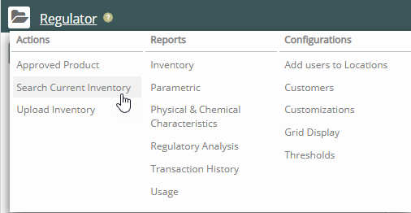
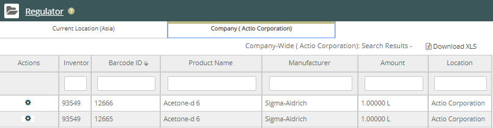
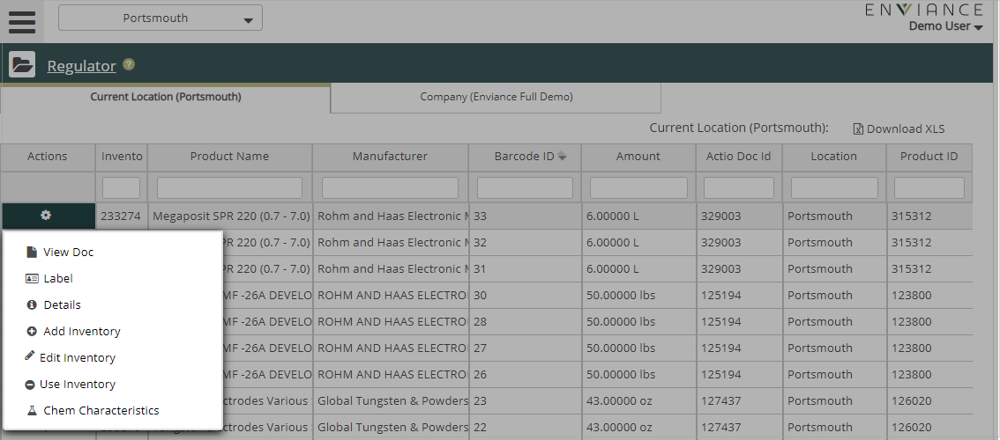

Click Regulator Main Menu. The navigation pane displays. Select Search Current Inventory from the Actions list.

The search page displays:

Enter a specific product to search for, or click Search to show all products currently in inventory for the location.
The results page displays.

From the resulting product list, click the gear icon in the Action column for the product you want and select the icon from list.
The results page displays. You can view the SDS, print labels and scan barcode labels, add and edit inventory, and see chemical characteristics.
